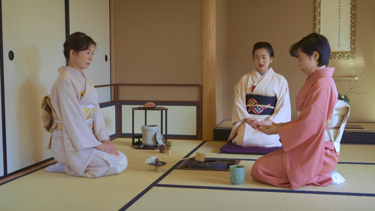

Tradičné umenie a remeslá:
Tradičné umenie a remeslá Japonska majú hlboké korene v histórii tejto krajiny. V priebehu stáročí sa vyvinuli rôzne formy umenia a remesiel, ktoré odzrkadľujú bohatú kultúru, hodnoty a estetiku japonského spoločenstva. Nasledujúce sľuby sa venujú niektorým z najvýznamnejších aspektov tradičného umenia a remesiel v Japonsku. Čajová ceremoniá (茶道, sadō): Čajová ceremoniá, známa aj ako sadō alebo chadó, nie je len spôsob prípravy a konzumácie čaju, ale celkovým umením prepojeným s filozofiou, etiketou a estetikou. Každý pohyb, gesto a predmet použitý v čajovej ceremoniáli nesie význam a vytvára atmosféru harmónie a pokoja. Ikebana (いけばな): Ikebana je umelecké aranžovanie kvetov, kde každý kúsok kvetu a stonky je umiestnený s cieľom vyjadriť harmóniu, rovnováhu a krásu. Táto forma umenia sa vyvíjala cez stáročia a rôzne školy ikebany majú svoje vlastné tradície a techniky. Tradičná japonská keramika: Japonská keramika je známa pre svoju eleganciu a jedinečný štýl. Regióny ako Arita a Kutani sú domovom pre slávne druhy keramiky, ktoré sú cenované nielen pre svoju krásu, ale aj pre precíznu ručnú prácu, ktorá je potrebná na ich vytvorenie. Noh divadlo (能, nō): Noh je tradičný japonský druh dramatického umenia, kde herci vystupujú v tradičných kostýmoch a maskách. Táto forma divadla sa vyznačuje pomalým pohybom, symbolikou a zdôrazňuje emocionálnu hĺbku postáv. Origami (折り紙): Origami, umenie skladania papiera, je jedným z najznámejších svetových remesiel. Tvorcovia vytvárajú zložité tvary a postavy pomocou jediného listu papiera, čím vyjadrujú jemnosť a zručnosť. V rámci týchto umení a remesiel sa v Japonsku prelína minulosť s prítomnosťou, vytvárajúc jedinečný a pôsobivý obraz kultúrneho dedičstva tejto krajiny. Každý kúsok umenia je nielen vizuálnou lahôdkou, ale aj oknom do hlbokých tradícií a hodnôt japonského ľudu.
Ceremoniálne rituály:
Ceremoniálne rituály v Japonsku predstavujú fascinujúci svet symboliky, etikety a hlbokého ducha, ktorý preniká každý aspekt japonskej kultúry. Tieto rituály nie sú len formálne akty, ale aj spôsob vyjadrovania úcty, harmónie a účasti na tradíciách, ktoré sa v Japonsku udržiavajú stáročia. V tejto súvislosti sa venujme niektorým z najvýraznejších ceremoniálnych rituálov, ktoré formujú tkáň japonskej spoločnosti. Čajová ceremoniá (茶道, sadō): Čajová ceremoniá, známa tiež ako sadō alebo chadó, predstavuje umenie prípravy a konzumácie zeleného čaju. Viac než len pitie čaju, je to celkový zážitok spojený s filozofiou, etiketou a duchovným rozvojom. V tejto ceremoniálnosti hrájú rolu kľúčové prvky, ako sú pohyb, ticho a vytvorenie harmónie v priestore. Shintoistické svadby (神前結婚, shinzen kekkon): Shinto je tradičný náboženský systém Japonska, a svadby podľa shintoistického obradu sa konajú pri svätyniach (jinja). Ceremónia zahŕňa oboznámenie novomanželov s božstvom, ktoré ich ochraňuje, a symbolické činy, ktoré zdôrazňujú ich záväzok a oddanosť. Seijin no Hi (成人の日): Tento deň, alebo Dňa dosiahnutia plnoletosti, oslavuje prechod mladých Japoncov do dospelosti. Ceremónia zahŕňa návštevu posvätných miest a bohoslužby, ktoré symbolizujú novú etapu v živote týchto mladých jedincov. Ohigan (お彼岸): Ohigan je buddhistický rituál, ktorý sa koná dvakrát do roka a zdôrazňuje vyrovnanie duše a dosiahnutie nirvány. Verí sa, že počas Ohigan sú duchovia predkovia schopní dosiahnuť pokojský odpočinok. Gagaku (雅楽): Gagaku je tradičná japonská hudba a tanec, ktoré sú spojené s ceremoniálnymi príležitosťami ako náboženské obrady a cárské udalosti. Tieto prevedenia majú hlboké korene v histórii a používajú tradičné hudobné nástroje a tanec, aby vytvorili atmosféru posvätnosti a veľkosti. Ochugen (お中元) a Oseibo (お歳暮): Tieto sú dva tradičné rituály obdarovávania, ktoré symbolizujú výraz vďaky a uznania. Ochugen sa vykonáva v polovici roka a Oseibo na konci roka. Oba rituály sú sprevádzané dôrazom na vhodný výber darov a etiketu. Ceremoniálne rituály v Japonsku hlboko súvisia s kultúrnymi hodnotami, etiketou a duchovným rozmerom života. Sú neoddeliteľnou súčasťou japonskej identity a poskytujú pohľad do zložitej siete tradícií, ktoré formujú tento národ. Tieto rituály nie sú len formálnymi udalosťami, ale prenosom hlbokých hodnôt a symboliky, ktorá pretrváva naprieč generáciami.
Kulinárska excelencia:
Kulinárska excelencia Japonska predstavuje jedinečnú harmoniu chutí, vôní a estetiky, ktoré sa vyznačujú čerstvými surovinami a jemným spracovaním. Japonská kuchyňa, známa ako washoku, je považovaná za jednu z najzdravších a najvýraznejších na svete. V nasledujúcich slovách sa pozrieme na niektoré z najdôležitejších aspektov kulinárskej excelencie Japonska. Sushi a Sashimi: Sushi, jedno z najznámejších jedál Japonska, spojuje ryžu s čerstvým rybím mäsom, zeleninou a ďalšími prísadami. Sashimi, na druhú stranu, je plátky čerstvého rybieho mäsa podávané bez ryže. Obe jedlá zdôrazňujú výnimočnú kvalitu a čerstvosť ingrediencií. Ramen: Ramen, teplá polievka s rezancami, je jedným z najobľúbenejších comfort food v Japonsku. Rôzne regióny majú svoje jedinečné verzie ramenu s rôznymi druhmi rezancov, polievok a prílohami, čo vytvára rozmanitú chuťovú paletu. Kaiseki: Kaiseki je viacchodová sada jedál, ktorá združuje sezónne prísady a rôznorodé techniky prípravy. Táto forma stravovania je považovaná za umelecký zážitok, kde jednotlivé chody sú starostlivo zostavené tak, aby vytvorili harmóniu chutí, farieb a textúr. Tempura: Tempura je technika smaženia, kde sa rôzne prísady, najčastejšie kôprové lístky alebo krevety, ponoria do ľahkej cesta a vyprážajú do zlatista. Táto metóda prípravy sa stala ikonickou v japonskej kuchyni a dodáva jedlám kruchú vonkajšiu vrstvu. Izakaya: Izakaya sú tradičné japonské hospody, kde sa podávajú malé porcie jedál a alkoholické nápoje. Atmosféra je neformálna a spoločná, čo umožňuje hostom vychutnať si rôzne chute a jedlá v príjemnom prostredí. Wagashi: Wagashi sú tradičné japonské sladkosti, ktoré sú visuálne krásne a často sú súčasťou čajovej ceremoniálie. Vyrábajú sa z prírodných prísad, ako je fazuľa a ryžový škrob, a majú jemnú sladkosť, ktorá nezakrýva, ale zdôrazňuje prírodné chute. Kaiseki: Takzvaná "kulinárska umenie", Kaiseki je sada jedál, ktorá podáva sezónne ingrediencie v malebnej prezentácii. Je to umenie využiť chuťové poháriky, aby sa poskytla bohatá a vyvážená chuťová skúsenosť. Matcha: Matcha, práškový zelený čaj, je neoddeliteľnou súčasťou japonskej kultúry a kuchyne. Okrem pitia sa používa aj na prípravu rôznych dezertov a sladkostí. Sake a Shochu: Sake je tradičný japonský ryžový nápoj, zatiaľ čo Shochu je destilovaný alkohol vyrábaný z rôznych surovín, vrátane sladu, ryže alebo zemiakov. Oba nápoje sú dôležitou súčasťou japonskej gastronómie a sprevádzajú rôzne jedlá. Japonská kulinárska excelencia nie je len o chuti, ale aj o estetike, presnosti a kvalite surovín. Je to umenie, ktoré zdôrazňuje harmóniu medzi jedlom a prírodou, čím poskytuje gastronomický zážitok, ktorý je jedinečný pre túto fascinujúcu krajinu.
Festivaly a oslavy:
Festivaly a oslavy v Japonsku tvoria farebnú mozaiku kultúrnych tradícií, histórie a radostí. Sú dychberúcim spôsobom, ako prepojiť minulosť s prítomnosťou a zároveň oslavovať súdržnosť japonského spoločenstva. Nasledujúce slová sa venú niektorým z najvýznamnejších festivalov a osláv, ktoré tvoria srdce japonskej kultúry. Hanami (花見): Hanami, čo doslova znamená "pozeranie na kvety," je slávnostné sledovanie kvitnúcich sakúrových stromov, najmä čerešní. Tento festival sa koná na jar a pritiahne tisíce ľudí do parkov a sadov na pikniky, hudbu a tanec pod rozkvitnutými stromami. Gion Matsuri (祇園祭): Gion Matsuri v Kjóte je jedným z najväčších a najslávnejších festivalov v Japonsku. Trvá celý júl a vrcholí grandióznym sprievodom s ohromujúcimi drevenými vozy, ktoré sú ručne zdobené a ťahané cez mestské ulice. Nebuta Matsuri (ねぶた祭): Tento festival v Aomori je považovaný za jedno z najfarebnejších podujatí v Japonsku. Jeho hlavnou atrakciou sú obrovské papierové lode osvetlené vnútri, ktoré sú následne nesené ulicami v nádherných nočných pochodoch. Awa Odori (阿波おどり): Awa Odori, alebo tanec z oblasti Awa, je jeden z najvýraznejších tanec festivalov v Japonsku. Počas tohto podujatia sa ulice plnia tanečníkmi v tradičných krojoch, ktorí predvádzajú energické tance pod sprievodom tradičnej hudby. Tanabata (七夕): Tanabata, alebo "Večer na siedmej noci," oslavuje legendárne stretávanie dvaju milujúcich sa hviezd, Vega a Altair. Počas tohto festivalu sa ľudia modlia a zavesia farbené papierové lietadlá na bambusové konáre, želajúc si svoje túžby. Shichi-Go-San (七五三): Shichi-Go-San, čo znamená "sedem, päť, tri," je festival venovaný deťom v ich sedemnástich, piatich a troch rokoch. Počas tejto oslavy sa rodičia spolu so svojimi deťmi obliekajú do tradičných krojov a navštevujú svätyne, aby požehnali ich rastúce potomstvo. Aki Matsuri (秋祭り): Aki Matsuri, alebo jeseňný festival, oslavuje bohatstvo úrody a začiatok jesennej sezóny. Festivaly tejto povahy sú časté po celom Japonsku a ponúkajú tradičné tance, hudbu a umenie súvisiace s prírodou a plodnosťou. Ohanami Kyokusui no En (お花見曲水の宴): Tento festival spojuje hanami (pozeranie na kvety) s tradičným čínskym obradom kyokusui no en, kde básnici píšu poéziu na malých loďkach na rieke. Účastníci sledujú kvety sakúry a zároveň sa púšťajú do tvorby poézie. Jidai Matsuri (時代祭り): Jidai Matsuri, alebo Festival historických období, je festival, ktorý prechádza cez históriu Japonska. Účastníci sa obliekajú do historických kostýmov a prechádzajú mestom Kjóto, predstavujúc dôležité postavy a obdobia z minulosti. Ose Matsuri (お勢祭): Ose Matsuri, alebo festival ose, je považovaný za jeden z najstarších festivalov v Japonsku. Oslava je venovaná bohyni Ose no Kami a obsahuje tradičné tance a hudbu. Tieto festivaly a oslavy nie sú len príležitosťou na oslavu, ale aj dôležitým spôsobom, ako prepojiť komunity, uctiť tradície a oslavovať krásu japonskej kultúry. Sú to chvíle radosti, farieb a hrdosti, ktoré oživujú dušu tejto fascinujúcej krajiny.
Moderná popkultúra:
Moderná popkultúra Japonska je fascinujúcim labyrintom inovácií, kreativity a globálneho vplyvu. Krajina, ktorá nosí klobúk tradičných hodnôt, zároveň tvorí unikátne diely popkultúry, ktoré oslovujú milióny ľudí na celom svete. V nasledujúcich slovách preskúmame niektoré z najdôležitejších aspektov moderného japonského popkulturného fenoménu. Manga a Anime: Manga, japonské komiksy, a anime, animované televízne alebo filmové sérii, tvoria srdce japonskej popkultúry. Ich vplyv sa rozšíril po celom svete, s fanúšikmi, ktorí sledujú rozmanité žánre a príbehy. Manga a anime často prelína hranice, ponúkajúc rozmanité zážitky pre všetky vekové skupiny. J-Pop a J-Rock: Japonská popová (J-Pop) a rocková (J-Rock) hudba sú kľúčovými piliermi japonskej hudobnej krajiny. Skupiny a interpreti ako Arashi, Perfume, ONE OK ROCK či Babymetal získali verných fanúšikov nielen v Japonsku, ale aj po celom svete. Ich hudba a vizuálne prvky sú príznačné pre moderný japonský štýl. Videohry: Japonsko je domovom mnohých svetovo známych herných firiem ako Nintendo, Sony a Capcom. Videohry ako Super Mario, Final Fantasy, a Pokémon sa stali kultovými fenoménmi, ktoré ovplyvnili herný priemysel a zábavu ako celok. Ešte stále dominujú globálnemu trhu a pravidelne prinášajú inovácie do herného sveta. Kawaii kultúra: Kawaii, čo znamená "milé" alebo "rozkošné," je estetický štýl, ktorý je v Japonsku neoddeliteľnou súčasťou popkultúry. Postavičky s veľkými očami, jemné farby a hravé vzory sú všadeprítomné v móde, dizajne a reklame. Táto kawaii kultúra sa stala symbolom mládeže a sebavyjadrenia. Harajuku a Shibuya móda: Štvrte Harajuku a Shibuya v Tokiu sú epicentrom experimentovania s módnymi trendmi. Móda v týchto štvrtoch sa vyznačuje odvážnymi kombináciami farieb, vzorov a štýlov. Značky ako Lolita, Gyaru, a Visual Kei definovali modernú módu v Japonsku. Technológia a inovácie: Japonsko je považované za lídra v oblasti technológií a inovácií. Robotika, umelej inteligencie, virtuálna a rozšírená realita sú témy, ktoré sa stali súčasťou každodenného života. Japonský prístup k technológiám a futuristickému vývoju je neustále na hranici inovácií. Cosplay: Cosplay, skratka pre "costume play," je fenomén, kde nadšení ľudia nosia kostýmy svojich obľúbených postáv z manga, anime, hier alebo filmov. Japonsko je domovom mnohých veľkých cosplay podujatí, kde sa nadšenci stretávajú, aby ukázali svoje tvorivé schopnosti a zdieľali lásku k ich obľúbeným dielam. Film a Televízia: Japonský film a televízia majú bohatú tradíciu. Od klasických diel Akiry Kurosawyho až po moderné anime filmy, japonský audiovizuálny priemysel prispieva k globálnemu kultúrnemu dialógu. Japonské televízne seriály (dorama) majú široký dosah a sú populárne nielen v Ázii, ale aj na Západe. Street Food a Food Trends: Japonská kuchyňa zasiahol svet svojou jedinečnou kombináciou chutí a prepracovaným spracovaním. Okrem tradičných jedál ako sushi a ramen, sa Japonsko stalo epicentrom food trendov a experimentovania s jedlami, vrátane rýchlo sa šíriacich trendov ako bubble tea a japonské sladkosti. Moderná popkultúra Japonska je dynamickým mixom tradícií a inovácií, ktorý odráža rýchly vývoj spoločnosti. Jej globálny dosah a kreatívna sila neustále formujú a ovplyvňujú svetovú popkultúru.